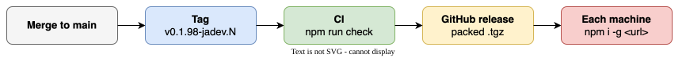

lavish-axi · JADEV build · Round 1
How should the JADEV build of Lavish reach every machine?
Today each developer clones the fork, runs the checks and packs it by hand. A good outcome: one command installs a version that passed CI, and nobody can pick up the upstream build by mistake.

Three options
Fit out of 100: reliability 40, effort per release 30, ease of install 30. Estimates.